Garden TransformationsComplete garden renovations and practical layouts
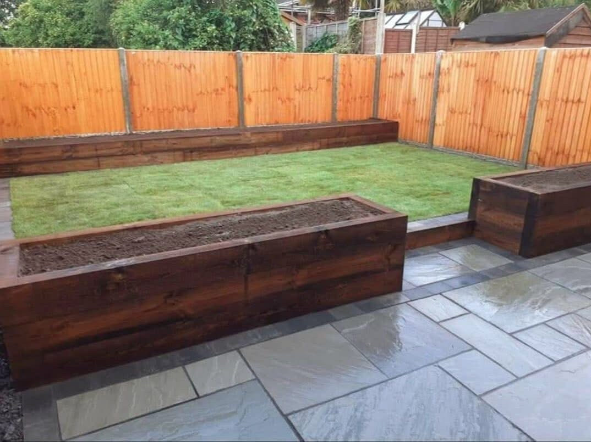
Patios & PavingPaved patios, paths and outdoor seating areas
Fencing & DeckingTimber and composite options for your garden
Turf & Artificial GrassLawn areas, planters and finishing details
YOUR GARDEN, YOUR WAY
Built around your home. Finished with the details in mind.
A new patio for summer evenings, a deck beside the house or a complete change of layout — Wynyard Landscape Ltd brings together paving, fencing, decking and lawn areas to make outdoor space more useful.
Request a quote →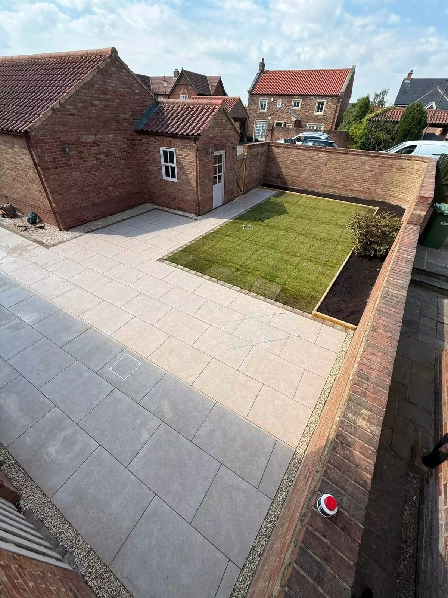
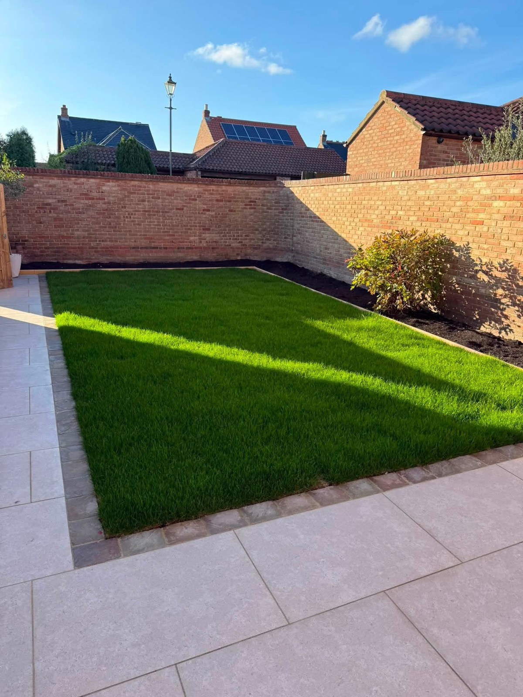
TIMBER & COMPOSITE DECKING
Step outside.
Stay a little longer.
Create space for relaxing and entertaining with timber or composite decking. Pair it with fencing, planters and a lawn area for a garden that feels connected to the home.
Discuss your project →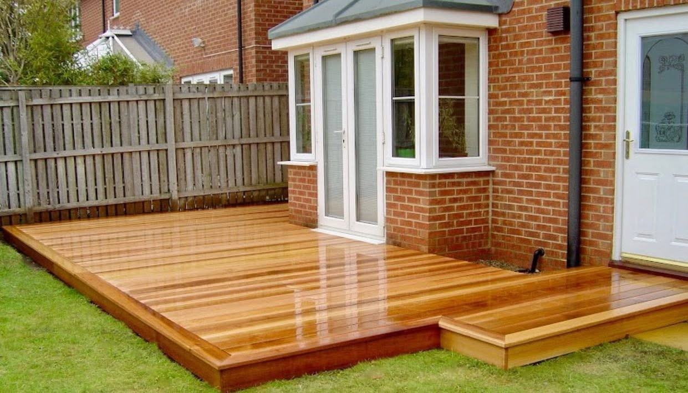
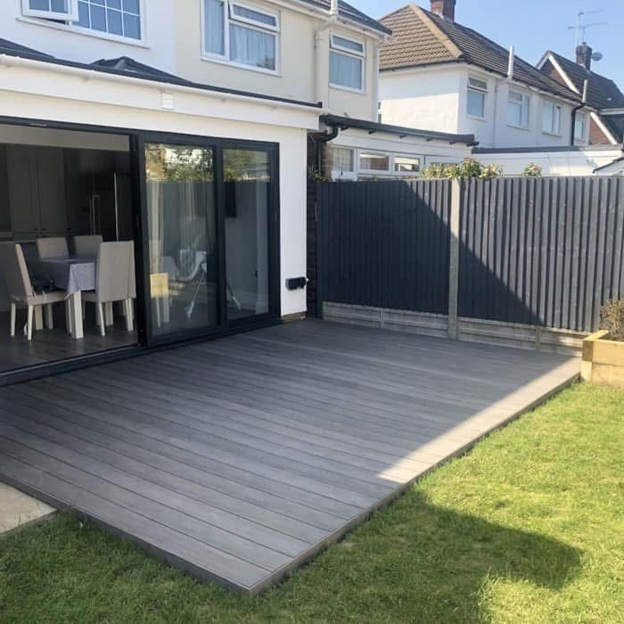
RECENT WORK
Outdoor spaces.
Details that make the difference.
Paving, decking, fencing and lawn areas from the supplied Wynyard portfolio.
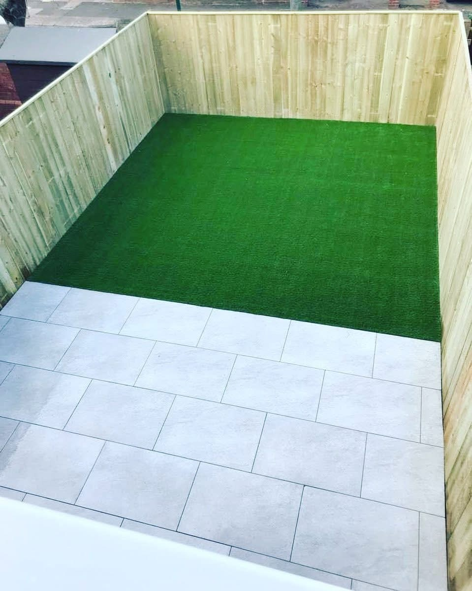
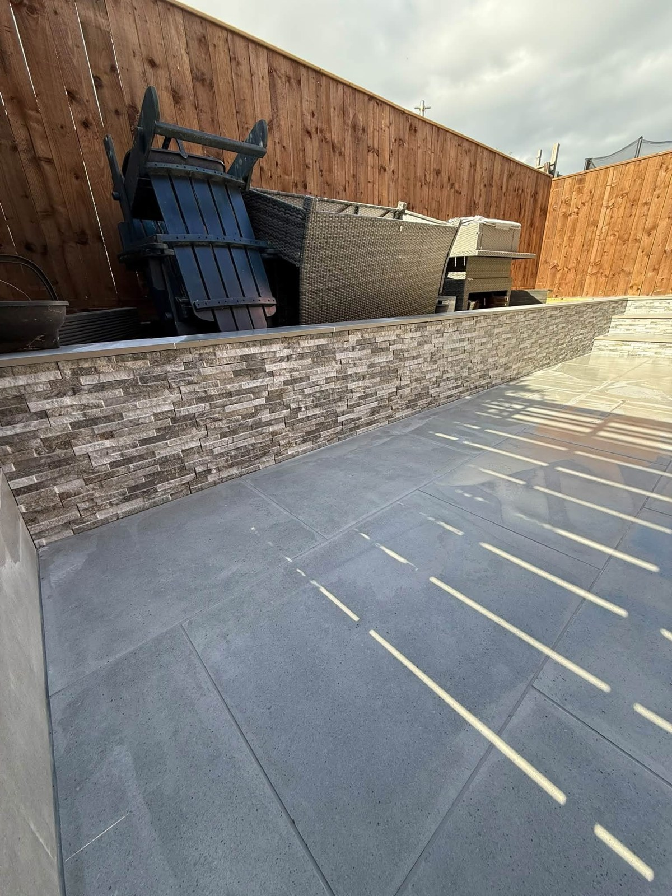
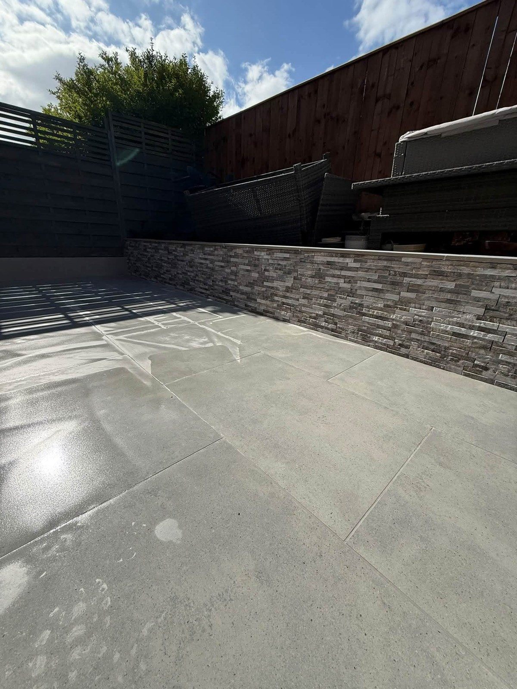
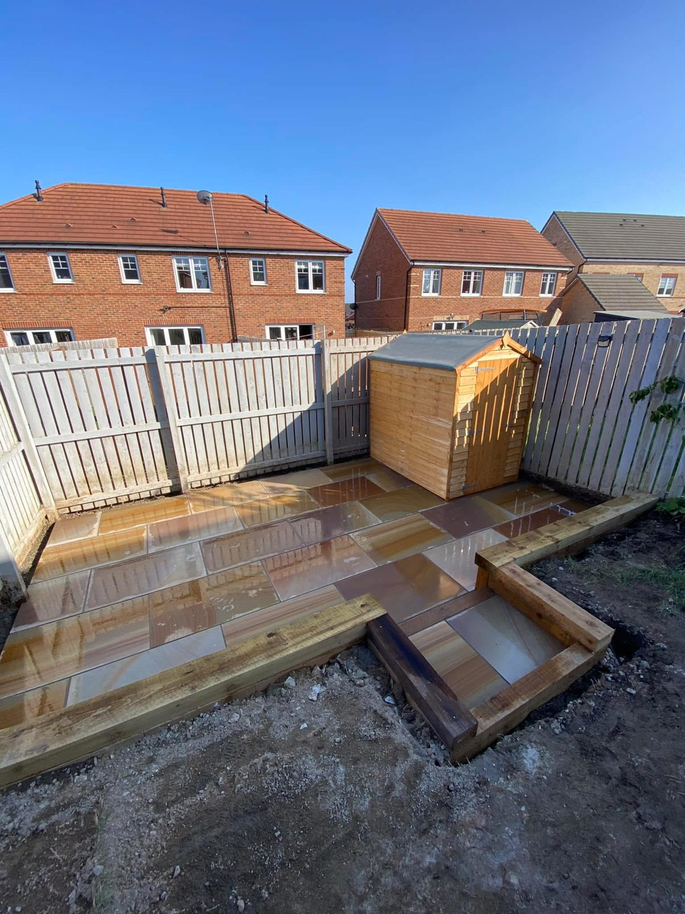
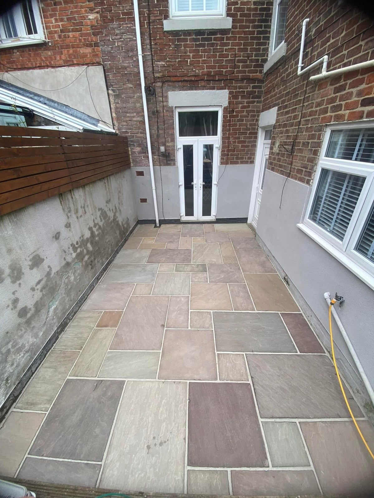
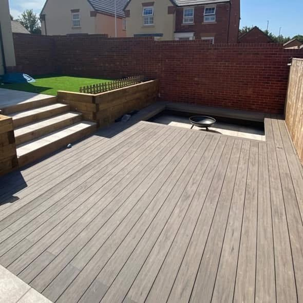
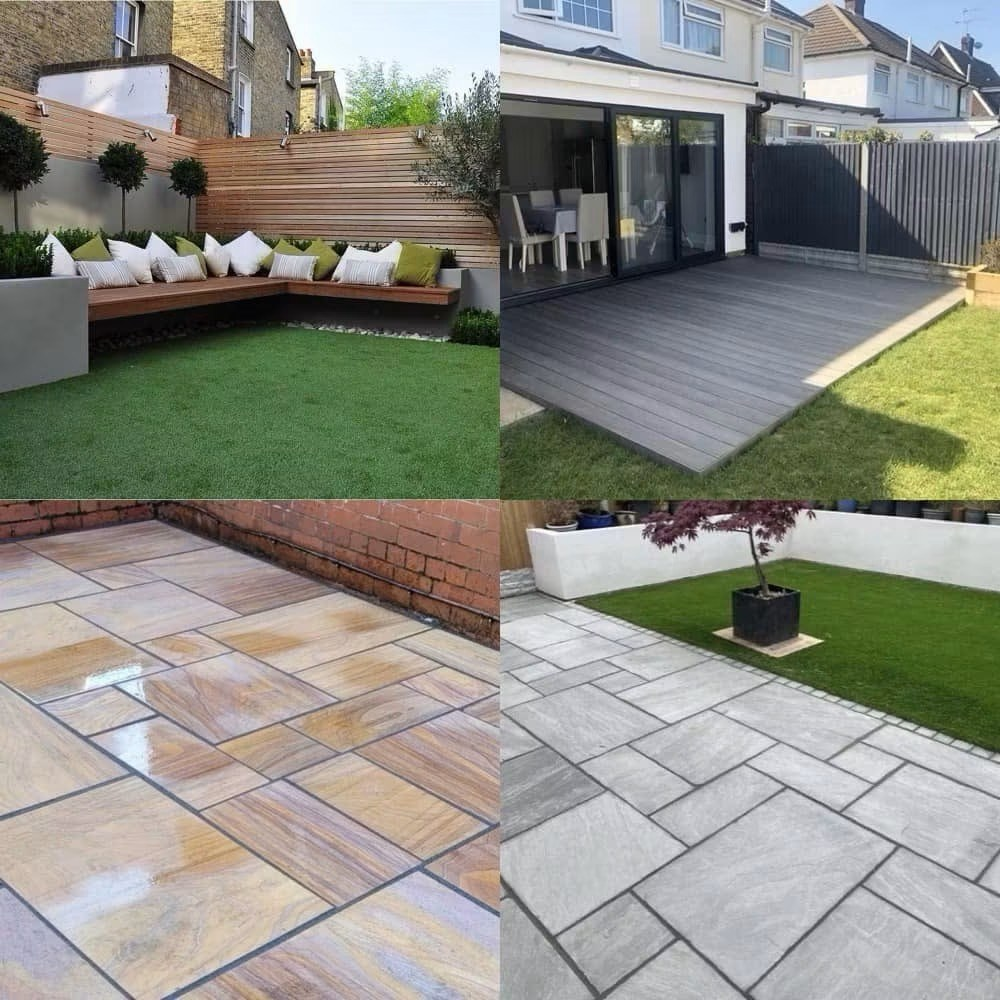
PAVING & FINISHING DETAILS
From the wider layout to the finishing touch.
Paving and wall finishes work together to give this seating area a defined shape. These two views show the same project from different angles.
Discuss your paving →WYNYARD LANDSCAPE LTD
Family-run.
Focused on your garden.
Wynyard Landscape Ltd is a family-run landscaping business based in Stockton-on-Tees. Services include patios, fencing, timber and composite decking, planters, artificial grass and turf, alongside complete garden renovations.
01
A joined-up garden
Bring seating areas, lawn space and boundaries together in one layout.
02
Paving, fencing & decking
Choose practical surfaces and garden structures to suit the way you use your space.
03
From a single job to a full renovation
Discuss a new patio, replacement fencing, decking or a complete garden change.
REQUEST A QUOTE
Tell us about
your garden plans.
Complete the form and it will open WhatsApp with your project details ready to send. This is a quote request, not a confirmed booking.
WYNYARD LANDSCAPE LTD
Ready to transform your garden?
Stockton-on-Tees · Patios, fencing, decking & lawns